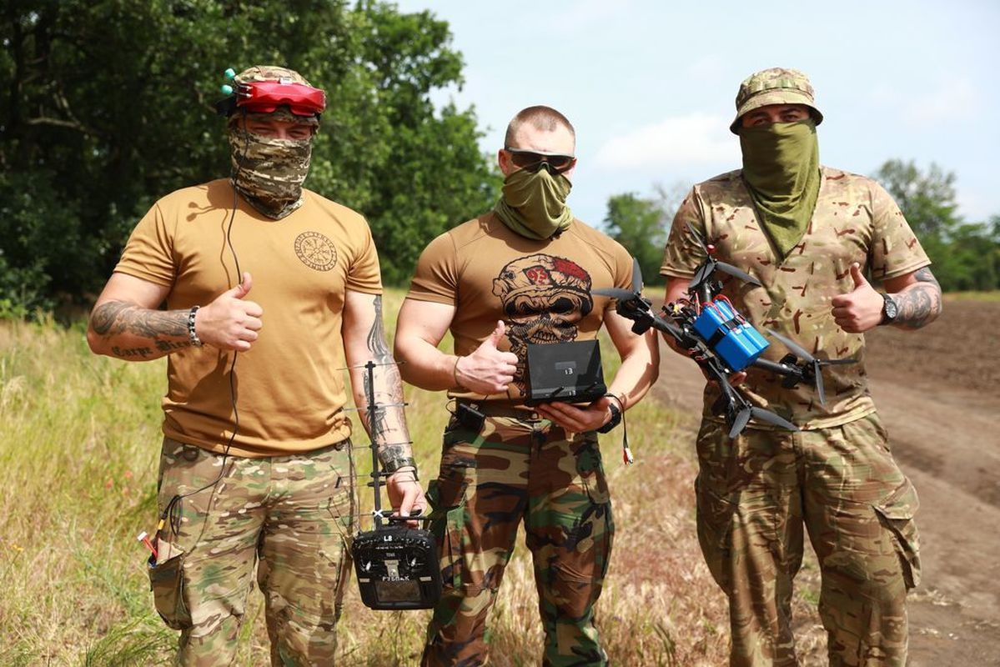

NOTE 11 · UKRAINE
FPV 드론과 전자전의 짧은 진화 주기
우크라이나 전장에서 사용하는 FPV 드론은 상용 비행제어기, 모터, 영상 송신기, 조종기와 임무용 탑재물을 조합한 소형 무인기다. 기체 가격이 낮고 부품 교체가 쉬워 부대와 소규모 업체가 임무에 맞춰 빠르게 수정할 수 있다.

곧 전자전 장비가 조종 링크와 GNSS를 방해했고, 양측은 출력과 주파수를 바꾸거나 중계 드론을 띄웠다. 미 육군의 2025년 분석은 2024년에 양측이 운용한 FPV의 60~80%가 재밍됐다는 추정도 소개한다. 숫자는 전장 보고의 불확실성을 감안해야 하지만, 손실을 전제로 대량 운용하는 체계라는 점은 분명하다.
FPV 운용에는 조종사만 필요한 것이 아니다. 정찰 드론이 표적 위치와 접근 경로를 확인하고, 기술 인력이 주파수와 탑재물을 설정하며, 발사 지점은 안테나와 중계 장비를 배치한다. 비행 뒤 영상과 실패 원인을 검토해야 다음 기체의 설정을 바꿀 수 있다.
이 경쟁의 단위는 전통적인 무기 개발 사업보다 훨씬 짧다. 특정 주파수의 재머가 보급되면 다른 대역의 송수신기를 달고, 그 대역이 탐지되면 다시 재머가 갱신된다. 기술보다 피드백 루프가 빠른 쪽이 잠시 우위를 얻는다.
기체의 낮은 가격은 전체 비용의 일부다. 배터리 충전, 예비 부품, 조종사 교육, 주파수 관리, 영상 처리와 생산 품질 관리가 계속 필요하다. 값싼 부품을 사용해도 진동이나 전원 잡음으로 영상 링크가 끊기면 임무 성공률은 크게 떨어진다.
이 사례에서 중요한 부분은 드론 단품의 성능보다 정찰, 전자전, 운용 교육, 조립과 현장 피드백이 연결된 체계다. 어느 한쪽의 대응이 보급되면 기체와 운용법을 함께 갱신하는 짧은 개발 주기가 유지되고 있다.